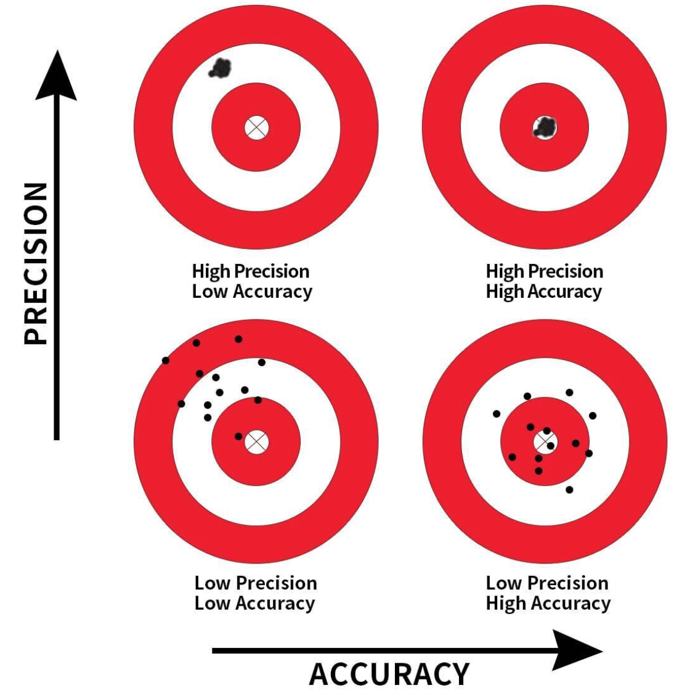
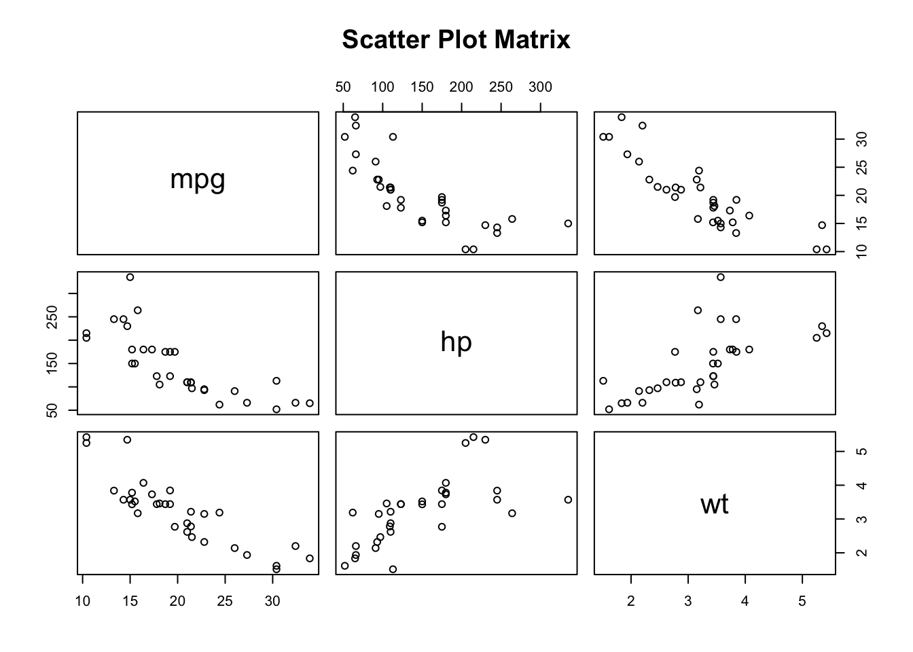

MGMT 17300: Data Mining Lab
Identifying Significant Predictors
Overview
Lesson Exercise Review
Lesson Question!
Course Learning Milestones
The 8 Key Steps of a Data Mining Project
- Multiple Regression Model
Lesson Exercises Review
Lesson Question!
Course Learning Milestones
Course Learning Milestones

The 8 Key Steps of a Data Mining Project
The 8 Key Steps of a Data Mining Project
Goal Setting
- Define the project’s goal
Data Understanding
- Acquire analysis tools
- Prepare data
- Data summarization
- Data visualization
Insights
- Data mining modeling
- Model validation
- Interpretation and implementation
Multiple Regression Model
Precision and Accuracy
Precision: Refers to the consistency or reliability of the model’s predictions.
Accuracy: Refers to how close the model’s predictions are to the true values.
In the context of regression:
- High Precision, Low Accuracy: Predictions are consistent but biased.
- High Precision, High Accuracy: Predictions are both consistent and valid.
- Low Precision, Low Accuracy: Predictions are neither consistent nor valid.
- Low Precision, High Accuracy: Predictions are valid on average but have high variability.
To achieve high precision and high accuracy, we need to meet the model assumptions.
Motivation: Controlling for a Variable
- Puzzle: What is the effect of education on income?
- Y: Income
- X: Education
- Objective: X \(\rightarrow\) Y
- Challenge: X \(\leftarrow\) W \(\rightarrow\) Y
- W: IQ (Intelligence)
- Solution: Control for W
Motivation: Controlling for a Variable

Source: Causal Inference Animated Plots
Motivation: Controlling for a Variable

Source: Causal Inference Animated Plots
Omitted Variables (Confounders)
One of the most common errors in observational studies (besides selection bias and information bias — classification or measurement error);
It occurs when we suggest that the explanation for something is “confounded” with the effect of another variable;
For example, “the sun rose because the rooster crowed,” and not because of Earth’s rotation.
How to Address Omitted Variable Bias?
Be well-versed in the literature;
Select good control variables for your model;
That is, perform a multiple regression model.
Multiple Regression
Regression analysis involving two or more independent variables (x’s).
This subject area, called multiple regression analysis, enables us to consider more independent variables (factors) and thus obtain better estimates of the relationship than are possible with simple linear regression.
Multiple Regression Model
The equation that describes how the dependent variable \(y\) is related to the independent variables \(x_1, x_2, \ldots x_p\) and an error term \(\epsilon\) is:
\[ y = \beta_0 + \beta_1 x_1 + \beta_2 x_2 + \dots + \beta_p x_p + \epsilon \]
Where:
\(\beta_0, \beta_1, \beta_2, \dots, \beta_p\) are the unknown parameters.
\(\epsilon\) is a random variable called the error term with the same assumptions as in simple regression (Normality, zero mean, constant variance, independence).
\(p\) is the number of independent variables (dimension or complexity of the model).
Multiple Regression Equation
The equation that describes how the mean value of \(y\) is related to \(x_1, x_2, \ldots x_p\) is:
\[ E(y) = \beta_0 + \beta_1 x_1 + \beta_2 x_2 + \dots + \beta_p x_p \]
\(\beta_1, \ldots, \beta_p\) measure the marginal effects of the respective independent variables.
For example, \(\beta_1\) is the change in \(E(y)\) corresponding to a 1-unit increase in \(x_1\), when all other independent variables are held constant or when we control for all other independent variables.
Estimated Multiple Regression Equation
\[ \hat{y} = b_0 + b_1 x_1 + b_2 x_2 + \dots + b_p x_p \]
A simple random sample is used to compute sample slopes \(b_0, b_1, b_2, \dots, b_p\) that are used as the point estimators of the population slopes \(\beta_0, \beta_1, \beta_2, \dots, \beta_p\).
Hence, \(\hat{y}\) estimates \(E(Y)\).
Multiple Regression Model Example
Objective
- Analyze the relationship between multiple predictors and miles per gallon (
mpg). - Build a multiple linear regression model to predict
mpgbased on:- Horsepower (
hp) - Weight (
wt) - Transmission Type (
am) - Engine Type (
vs) - Number of Cylinders (
cyl)
- Horsepower (
Variables Used
- mpg: Miles per gallon (Dependent Variable).
- hp: Gross horsepower.
- wt: Weight (1000 lbs).
- am: Transmission (0 = automatic, 1 = manual).
- vs: Engine type (0 = V-shaped, 1 = straight).
- cyl: Number of cylinders.
Data Structure
# Structure of the dataset
str(mtcars[, c("mpg", "hp", "wt", "am", "vs", "cyl")])'data.frame': 32 obs. of 6 variables:
$ mpg: num 21 21 22.8 21.4 18.7 18.1 14.3 24.4 22.8 19.2 ...
$ hp : num 110 110 93 110 175 105 245 62 95 123 ...
$ wt : num 2.62 2.88 2.32 3.21 3.44 ...
$ am : num 1 1 1 0 0 0 0 0 0 0 ...
$ vs : num 0 0 1 1 0 1 0 1 1 1 ...
$ cyl: num 6 6 4 6 8 6 8 4 4 6 ...Summary Statistics
# Summary statistics for selected variables
summary(mtcars[, c("mpg", "hp", "wt", "am", "vs", "cyl")])Converting Categorical Variables
# Convert 'am', 'vs', and 'cyl' to factors
mtcars$am <- factor(mtcars$am, labels = c("Automatic", "Manual"))
mtcars$vs <- factor(mtcars$vs, labels = c("V-shaped", "Straight"))
mtcars$cyl <- factor(mtcars$cyl)Checking for Missing Values
# Check for NA values
colSums(is.na(mtcars))- Observation: No missing values in the selected variables.
Visualizing Relationships: Pairwise Scatter Plots
# Scatter plot matrix
pairs(mtcars[, c("mpg", "hp", "wt")], main = "Scatter Plot Matrix")
Boxplots for Categorical Variables
# Boxplot of mpg by Transmission Type
boxplot(mpg ~ am, data = mtcars,
main = "MPG by Transmission Type",
xlab = "Transmission",
ylab = "Miles per Gallon",
col = c("lightblue", "lightgreen"))
Fitting the Multiple Regression Model
# Fit the multiple linear regression model
model_mult <- lm(mpg ~ hp + wt + am + vs + cyl, data = mtcars)
summary(model_mult)# Fit the multiple linear regression model
model_mult <- lm(mpg ~ hp + wt + am + vs + cyl, data = mtcars)
summary(model_mult)
Call:
lm(formula = mpg ~ hp + wt + am + vs + cyl, data = mtcars)
Residuals:
Min 1Q Median 3Q Max
-4.3405 -1.2158 0.0046 0.9389 4.6354
Coefficients:
Estimate Std. Error t value Pr(>|t|)
(Intercept) 31.18461 3.42002 9.118 2e-09 ***
hp -0.03475 0.01382 -2.515 0.0187 *
wt -2.37337 0.88763 -2.674 0.0130 *
amManual 2.70384 1.59850 1.691 0.1032
vsStraight 1.99000 1.76018 1.131 0.2690
cyl6 -2.09011 1.62868 -1.283 0.2112
cyl8 0.29098 3.14270 0.093 0.9270
---
Signif. codes: 0 '***' 0.001 '**' 0.01 '*' 0.05 '.' 0.1 ' ' 1
Residual standard error: 2.397 on 25 degrees of freedom
Multiple R-squared: 0.8724, Adjusted R-squared: 0.8418
F-statistic: 28.49 on 6 and 25 DF, p-value: 5.064e-10Interpreting the Coefficients
- Intercept (\(\beta_0\)): Expected
mpgwhen all predictors are at reference levels or zero. - hp: Change in
mpgper unit increase in horsepower, holding other variables constant. - wt: Change in
mpgper 1000 lbs increase in weight, holding other variables constant. - am: Difference in
mpgbetween manual and automatic transmission. - vs: Difference in
mpgbetween straight and V-shaped engines. - cyl: Effect of the number of cylinders on
mpg.
Interpreting the Results
Significant Predictors
- hp and wt: Generally significant predictors of
mpg. - am: Transmission type may have a significant effect.
- vs and cyl: Assess their p-values to determine significance.
- hp and wt: Generally significant predictors of
Evaluating the Model
Adjusted R-squared: Measures the proportion of variance in
mpgexplained by the model, adjusted for the number of predictors.F-statistic: Tests the overall significance of the model.
p-values: Assess the significance of individual predictors.
When to Add or Delete Variables
Strategies for Adding or Removing Variables
| # | Strategy | Description | Add Variables | Remove Variables |
|---|---|---|---|---|
| 1 | P-Value | Based on statistical significance | If p-value < 0.05 | If p-value > 0.05 |
| 2 | Adjusted R-Squared | Checks if model fit improves | If adjusted \(R^2\) increases | If adjusted \(R^2\) decreases |
| 3 | F-Test | Compares models with and without added variables | If F-test indicates significant improvement | If F-test shows no significant improvement |
| 4 | AIC or BIC | Balances model fit and complexity | If AIC/BIC decreases | If AIC/BIC increases |
| 5 | Stepwise Regression | Automated selection procedure based on statistical contribution | Add variables with high statistical contribution | Remove variables with low contribution |
| 6 | Multicollinearity (VIF) | The Variance Inflation Factor detects multicollinearity between independent variables | Use the full model | If VIF > 10 |
| 7 | Best Subset Selection | Compares all possible combinations of predictors to identify the best model | Adds the combination of predictors with the best performance based on chosen criteria (e.g., adjusted \(R^2\)) | Evaluates models by selecting the best subset |
| 8 | Cross-Validation | Assesses model performance across different data subsets | If cross-validation performance improves | If cross-validation performance worsens |
| 9 | Good vs Bad Controls | For causal inference purposes | Add good controls that help block non-causal paths | Remove bad controls that open new spurious paths |
| 10 | Theoretical Justification | Adds or removes variables based on theory, domain knowledge, or experience | Add based on theory or domain knowledge | Remove variables that are irrelevant, regardless of statistical significance |
1. P-Value Approach
The \(p-value\) represents the probability of observing the given result, or one more extreme value, assuming that the coefficient for that predictor is equal to zero and indicating that the predictor has no association with the dependent variable (null hypothesis is true). A low \(p-value\) (typically \(< 0.05\)) suggests strong evidence against the null hypothesis, indicating the predictor is statistically significant.
Method: Use the p-values from the summary() output of a linear model to identify predictors that are statistically significant.
Selection: Remove predictors with p-values > 0.05, as they may not significantly contribute to the model.
model_full <- lm(mpg ~ ., data = mtcars)
summary(model_full) # Check p-values and remove if p-value > 0.05
model <- lm(mpg ~ hp + wt + am + vs + cyl, data = mtcars)
summary(model) # Check p-values and remove if p-value > 0.05Results:
Based on the full model, only one independent variable (
wt) must remain in the model.Based on our original model two variables (
wtandhp) should be in the model.
2. Adjusted R-Squared
Method: Use adjusted R-squared to compare models; it adjusts for the number of predictors and provides a better measure of model fit than regular R-squared.
Selection: Choose the model with the highest adjusted R-squared value for better predictive power.
summary(model_full)$adj.r.squared # Compare adjusted R-squared
summary(model)$adj.r.squaredResult: Our original model presents a highest adjusted R-squared value (81.5%).
3. F-Test
Method: Use the F-test to compare nested models to determine if the more complex model provides a significantly better fit.
Selection: Choose the more complex model if the F-test result shows a significant improvement (\(p-value < 0.05\)).
anova(model, model_full) # Compare models with an F-testResult: Since the \(p-value\) is high ($ > 0.05$), we fail to reject the null hypothesis that the additional predictors in the full model do not improve the model significantly. Therefore, our original model is sufficient and more parsimonious, as it performs similarly to the full model without the extra complexity.
4. AIC/BIC
Method: Use AIC (Akaike Information Criterion) and BIC (Bayesian Information Criterion) to compare models; lower values indicate a better model.
Selection: Choose the model with the lowest AIC/BIC for optimal complexity and fit.
AIC(model, model_full) # Compare AIC values
BIC(model, model_full) # Compare BIC valuesResult: Our original model presents lowest AIC/BIC scores.
5. Stepwise Regression
Method: Perform stepwise regression (backward and/or forward) to add or remove predictors based on AIC to find the best-fitting model. It does not explore all possible combinations of predictors but uses an efficient stepwise approach to find a model with a minimized AIC.
Selection: The resulting model from stepwise regression is a local optimal based on AIC.
library(MASS)
step_model <- stepAIC(model_full, direction = "both") # Stepwise regression
summary(step_model)Result: The stepAIC() function provides the best model based on AIC, balancing model complexity and fit.
6. Multicollinearity (VIF)
Method: Use the Variance Inflation Factor (VIF) to detect multicollinearity. High VIF (> 10) indicates multicollinearity, which can inflate standard errors.
Selection: Remove or adjust predictors with high VIF values to improve model stability.
library(car)
vif(model_full) # Check for multicollinearity (remove variables with VIF > 10)Result: The output indicates that cyl, disp, and wt have high multicollinearity (VIF > 10). We should consider modifying the model by removing or combining these variables to improve model stability.
7. Best Subset Selection
Method: Use the regsubsets() function from the leaps package to evaluate all possible combinations of predictors and identify the best model. This method guarantees that the best subset of predictors is selected according to a chosen criterion (e.g., adjusted \(R^2\), AIC, BIC).
Selection: This method ensures an exhaustive search of all possible combinations, providing the best model for each subset size.
library(leaps)
# Fit the best subset model
best_model <- regsubsets(mpg ~ ., data = mtcars, nbest = 1)
# Extract the summary of the model
best_model_summary <- summary(best_model)
# Extract metrics
adj_r2_values <- best_model_summary$adjr2
bic_values <- best_model_summary$bic
# Find the best model indices based on each criterion
best_adj_r2_index <- which.max(adj_r2_values)
best_bic_index <- which.min(bic_values)
# Display the best models based on the chosen criteria
cat("Best model based on adjusted R^2 includes:\n")
print(coef(best_model, best_adj_r2_index))
cat("\nBest model based on BIC includes:\n")
print(coef(best_model, best_bic_index))Result: The regsubsets() function outputs the best subset of predictors for each model size, allowing you to compare and choose the optimal model based on adjusted \(R^2\), BIC, or other criteria.
7. Best Subset Selection
| Criterion | Pros | Cons |
|---|---|---|
| Adjusted R-Squared | - Model Fit: Directly measures how well the model explains variability, accounting for predictors. - Intuitive Interpretation: Higher values indicate better explanatory power. - Comparative Power: Easy comparison between models with different numbers of predictors. |
- Overemphasis on Fit: May select complex models without considering overfitting. - Lacks Formal Complexity Penalty: No rigorous penalty for model complexity compared to BIC. |
| BIC | - Penalizes Complexity: Strong penalty for adding predictors helps avoid overfitting. - Model Parsimony: Selects simpler models for better generalizability. - Likelihood-Based: Suitable for comparing non-nested models. |
- Potential for Underfitting: May result in overly simple models, omitting key predictors. - Less Intuitive: Harder to interpret than adjusted \(R^2\). - Sample Size Sensitivity: Penalty increases with sample size, possibly leading to oversimplified models. |
7. Best Subset Selection
When to Choose Each Criterion
Adjusted \(R^2\):
- Best when maximizing explanatory power is the goal, particularly for smaller datasets.
- Ideal for situations where interpretability and a moderate concern for complexity are priorities.
BIC:
- Preferred when model parsimony and avoiding overfitting are more important, especially for large datasets.
- Suitable when generalization and predictive capability are primary concerns.
8. Cross-Validation
Method: Use k-fold cross-validation to assess the predictive performance of the model. This method helps evaluate how the model generalizes to unseen data.
Selection: Choose the model with better cross-validation metrics (e.g., lower mean squared error).
library(caret)
# Define the cross-validation method
trainControl <- trainControl(method = "cv", number = 10)
# Train the model based on adjusted R-squared criteria
model_adj_r2 <- train(mpg ~ disp + hp + wt + qsec + am, data = mtcars, method = "lm", trControl = trainControl)
# print(model_adj_r2)
# Train the model based on BIC criteria
model_bic <- train(mpg ~ wt + qsec + am, data = mtcars, method = "lm", trControl = trainControl)
# print(model_bic)
# Compare RMSE, R-squared, and MAE (Mean Absolute Error) for both models
#cat("\nComparison of Prediction Performance:\n")
performance_comparison <- rbind(
"Model_adj_r2" = model_adj_r2$results[, c("RMSE", "Rsquared", "MAE")],
"Model_bic" = model_bic$results[, c("RMSE", "Rsquared", "MAE")]
)
print(performance_comparison)8. Cross-Validation: output
- RMSE (Root Mean Squared Error):
- Represents the standard deviation of prediction errors.
- Lower values indicate better performance (predictions are closer to actual values).
- R-squared:
- Indicates how well the independent variables explain the variability of the dependent variable.
- Higher values (closer to 1) suggest better explanatory power.
- MAE (Mean Absolute Error):
- Measures the average magnitude of errors in predictions.
- Lower values indicate more accurate predictions.
8. Cross-Validation: Conclusion
model_adj_r2:
Better at explaining variability (higher R-squared).
Slightly higher prediction error (RMSE and MAE).
model_bic:
More accurate predictions (lower RMSE and MAE).
Explains less variability (lower R-squared).
Recommendation
Choose Model_adj_r2: If the goal is to maximize explanation of variability in
mpg.Choose Model_bic: If the goal is to minimize prediction error for better accuracy.
Final Choice: Depends if the analysis objective prioritize explanatory power or prediction accuracy.
Summary
Summary
Main Takeaways from this lecture:
- Model Evaluation and Precision:
- Precision: Consistency of model predictions.
- Accuracy: Closeness of predictions to true values.
- Aim for high precision and high accuracy by meeting model assumptions.
- Controlling for Variables:
- Importance of controlling for confounders.
- Use multiple regression to control for potential confounding variables.
- Strategies for Model Selection:
- Identify predictors with low p-values (< 0.05) to determine their significance.
- Use Adjusted R-Squared, AIC/BIC, and F-Tests for model comparison.
- Multicollinearity: Check with VIF and address high VIF (> 10).
- Best Subset Selection: Use
regsubsets()to find the best combination of predictors. - Cross-Validation: Evaluate models using RMSE, R-squared, and MAE.
- Key Recommendations:
- Choose the model with higher adjusted R-squared for explanatory power.
- Opt for lower RMSE and MAE if prediction accuracy is the main objective.
- Balance between complexity and performance using AIC/BIC and other metrics.